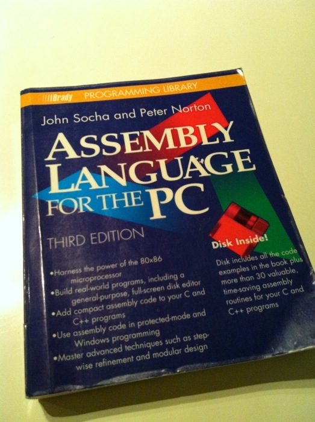
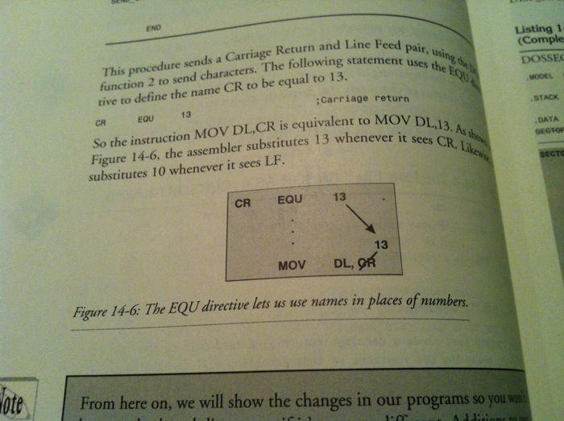
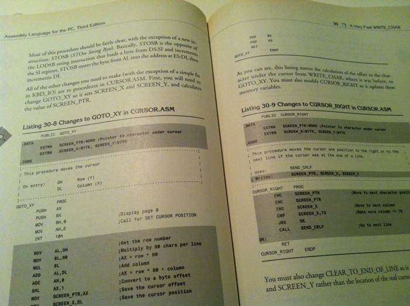
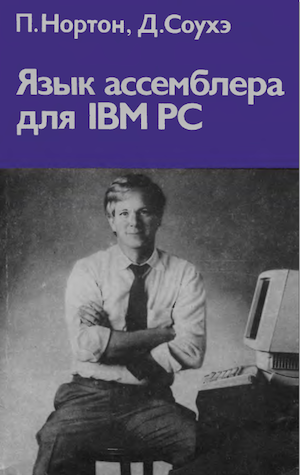

"Язык ассемблера для IBM PC", Питер Нортон и Джон Соухэ
Продолжаю обзор книг, которые так или иначе оказали на меня значительное влияние в свое время. Сегодня это книга Питера Нортона и Джона Соухэ про программирование на ассемблере.
Небольшое лирическое отступление.
Кстати, все знают, что Нортон Коммандер написал не Питер Нортон? Его в одиночку, по крайне мере до канонической версии 3 включительно, писал и поддерживал товарищ Соухэ, применяя, как он сам говорил, экстремальный на то время подход, смешивая С и ассемблер. Это позволяло быстро разрабатывать эффективные программы, тогда как “тру”-программисты того времени писали исключительно на ассемблере.
Кстати, все знают, что “за бугром” синий текстовый экран с двумя панелями называют “доисторической русской программой”? Забавно, что проникновение Коммандера в умы компьютерщиков на территории бывшего СССР имеет несравнимые масштабы по отношение к тем местам, где Коммандер родился.
Ладно, вернемся к книге. Мне понравилась тема покупки старых книг практически за бесценок, просто чтобы подержать их в руках.

Снова радость - списанный библиотечный экземпляр, проклеенный скотчем.

Я не люблю, когда пишут в книгах или загибают листы, но выглядит это трогательно. Кто-то это явно зубрил.

Ну как можно после такой иллюстрации не понять, как работает EQU?

Или DUP.

Или стек.

Или как перехватывать прерывания в ДОСе.

Кстати, это оказалось третье издание книги, в котором очень кратко описывался защищенный режим 286 и 386-х.

В общем, книга отличная.

На протяжении всей книги описывается процесс создания визуального посекторного редактора диска (дискеты или винчестера). В конце вы получаете весьма нетривиальную программу приличного размера. Начав с самых азов ассемблера, придется освоить арифметические операции, работу с прерываниями БИОС и ДОС, прямой доступ в экранную область, клавиатуру. Но самое главное, появляется понимание как писать действительно большие программы на ассемблере. Для меня, например, было реальным открытием, что если каждая подпрограмма будет по умолчанию сохранять регистры, кроме используемых для передачи и возврата данных, то писать становится разительно проще. Конечно, сейчас это знание для детского сада, но в детском саду должен быть кто-то, кто это донесет.
В конце приводится полный откомментированный листинг этого редактора.
Еще в третьем издании добавлена отличная глава про смешивание ассемблера с языками типа С или Паскаля. В деталях разжевывается передача параметров и использование ассемблерных вставок. На десерт в одном из приложений дается исходник библиотеки с недвусмысленным названием SOCHALIB. В ней много разных функций для работы с экраном, мышью, клавиатурой. А еще там есть некоторые функции с префиксом Fast в имени. Например, те, что работают с экраном естественно не используют БИОС, а работают напрямую с экранной областью. Я был приятно удивлен, когда функция вывода символа на экран вместо умножения Y*80 для вычисления базы строки использовала таблицу (pre-calc) с уже посчитанными значениями. Не удивлюсь, если код этой библиотеки живет где-то в коде Коммандера или Утилит Нортона.

Кстати, если кому интересно, вот русский перевод первого издания.
Нортон П., Язык ассемблера для IBM PC

Disclaimer